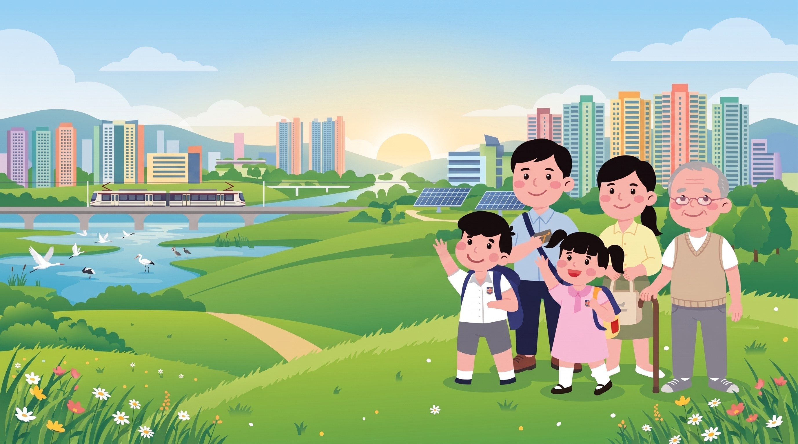
🏞️
[bg_game_cover_title.png]
陳氏一家在山丘眺望朝陽下的天水圍新市鎮
新市鎮拓展署
規劃總監 林主管 誠邀你加入！
天水圍奇蹟：自給自足大冒險
四年級人文科單元：發展新市鎮故事模擬器
陳氏一家（爸爸、媽媽、爺爺、小皇、小英）受夠了市區唐樓的狹窄劏房！
政府撥款 1,000 萬元建設基金 委任你為規劃專員，在 6 年內建立自給自足、連繫市區並守護濕地的現代新市鎮！
⚠️ 教學聲明與歷史備註： 本模擬器為運用人工智能 (AI) 輔助設計之教學輔助程式，旨在支援四年級人文科課堂探究學習。部分情景、設施造價及歷史時間軸已作教學化簡化，可能與真實歷史及現實地點略有出入（例如：港鐵屯馬綫實於 2021 年全綫全面通車，程式為方便新市鎮外聯交通之課題探究，特將鐵路網絡脈絡綜合呈現），僅供課堂探究與反思討論之用。
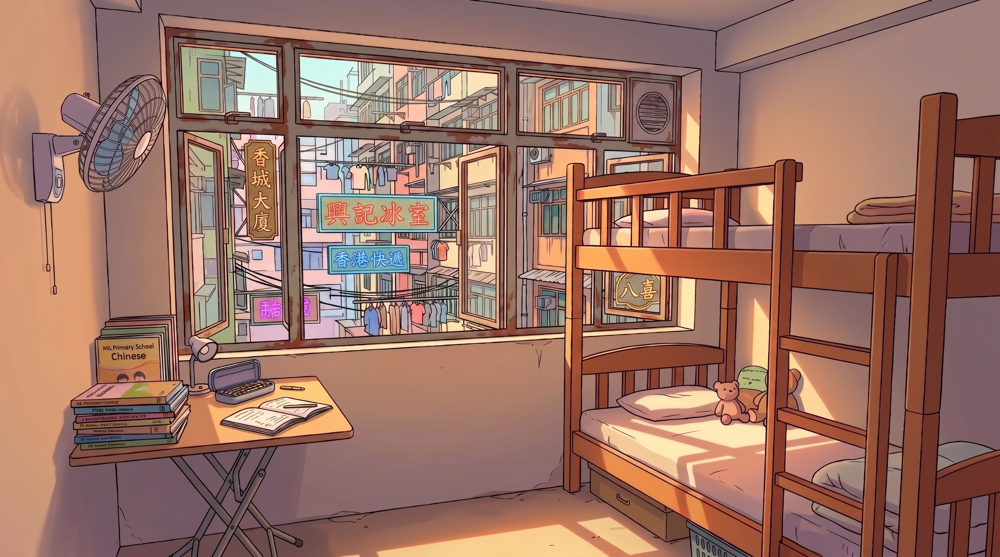
🏚️
[bg_old_subdivided_flat.png]
九龍市區狹窄唐樓劏房實景
🏚️ 舊區現狀：不足百呎劏房・無升降機・空間極度擁擠
 📋 規劃總監 林主管
📋 規劃總監 林主管
📢 新市鎮拓展署 規劃總監
任務指引與授權
第一章：逃離劏房・陳氏一家的心願
「陳小明 規劃專員，歡迎加入新市鎮拓展團隊！
陳氏一家五口擠在狹窄劏房，生活艱苦。1980年代政府推行新市鎮計劃，在天水圍平整魚塘，並撥款1,000萬元建設基金。請在6年內規劃房屋、醫療、交通及生態，為全家建立自給自足的宜居家園！」
陳氏一家五口擠在狹窄劏房，生活艱苦。1980年代政府推行新市鎮計劃，在天水圍平整魚塘，並撥款1,000萬元建設基金。請在6年內規劃房屋、醫療、交通及生態，為全家建立自給自足的宜居家園！」
🎯 核心使命：滿足生活需要 ｜ 達成自給自足 ｜ 守護候鳥生態
👨👩👧👦 陳氏一家生活需求 (The Sims)
5 位成員動態狀態
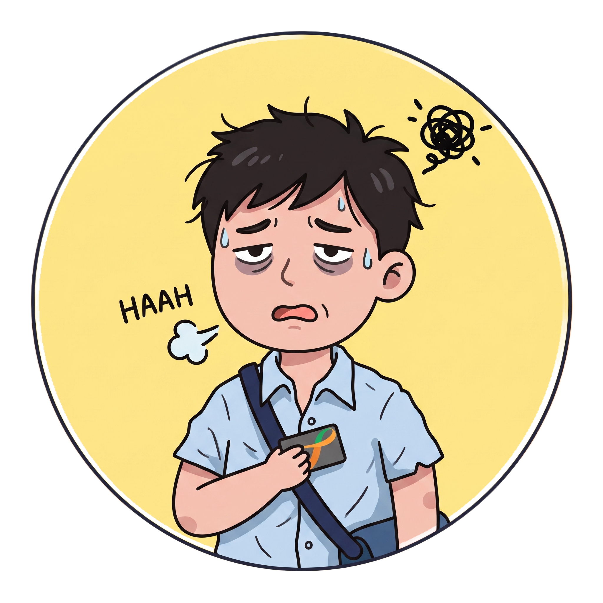
👨
爸爸
塞車遲到
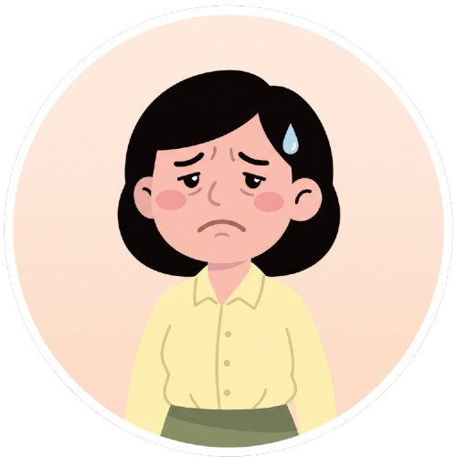
👩
媽媽
買餸好遠
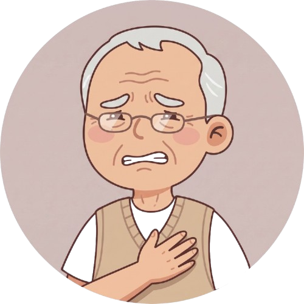
👴
爺爺
求醫困難
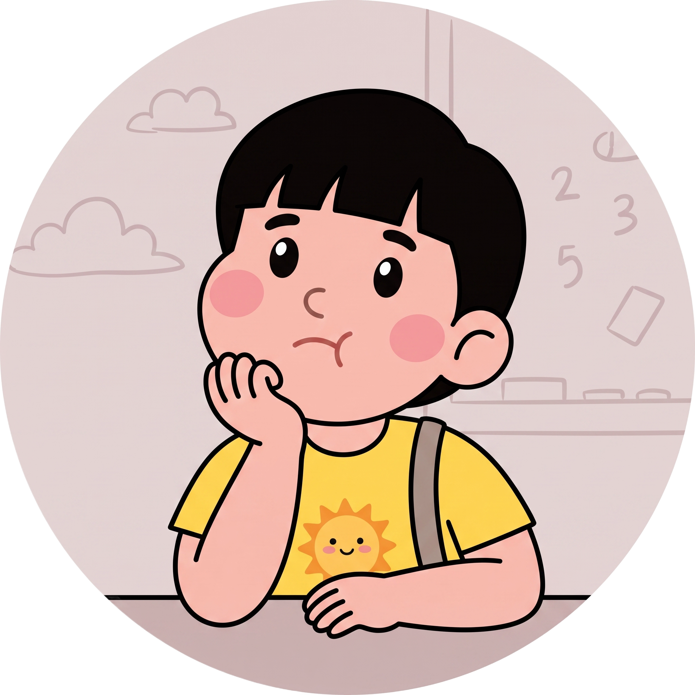
👦
小皇
無學無玩
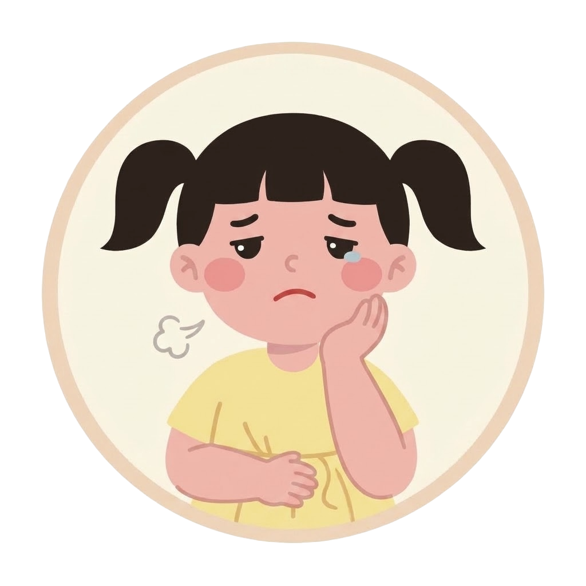
👧
小英
無聊發呆
自給自足率
15%
居民滿意度
20分
對外連繫度
10%
生態保育度
50分
🏛️ 規劃選單 (10選6，每年限建1項)：
年維護: -0萬

【房屋安居】
💰💰💰 (200萬)
天耀/天瑞公營屋苑
📈 每年稅收: +100萬 ｜ 附設屋邨小學，解決跨區就學
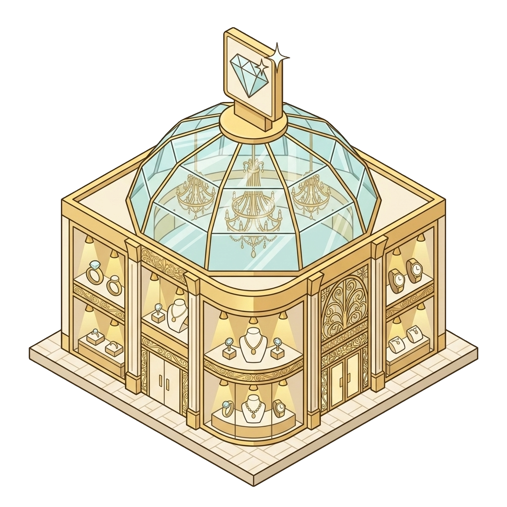
💎
【奢華商貿】
💰💰💰💰💰 (300萬)
國際高端名牌購物中心
📉 無蔬果魚肉 ｜ 維護: -30萬/年 (公帑黑洞)

🥩
【飲食商貿】
💰💰 (150萬)
天盛街市＋置富商場
📈 每年商稅: +60萬 ｜ 維護: -15萬/年 (三餐必備)
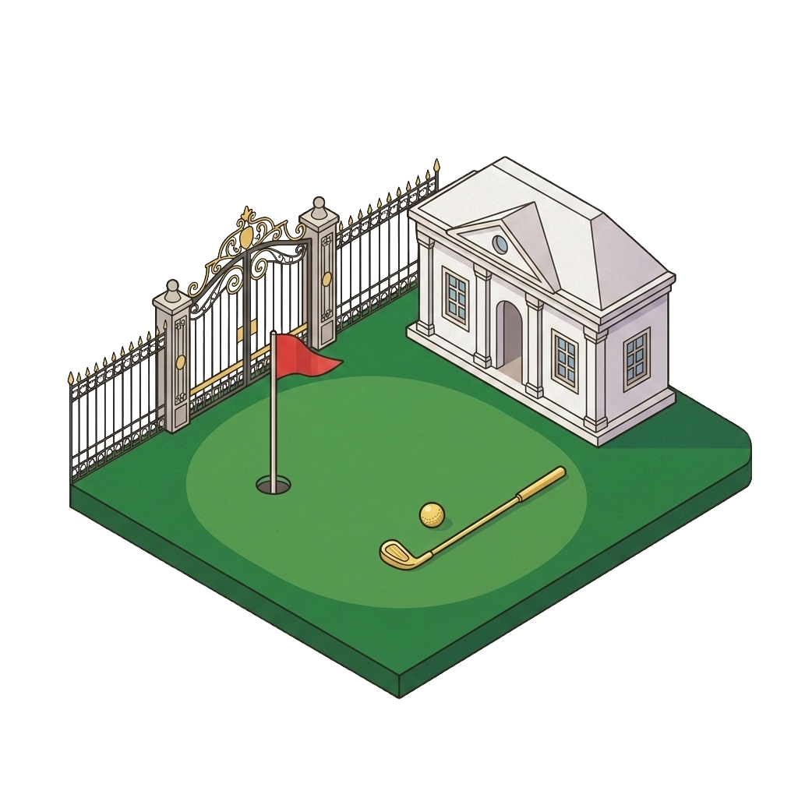
⛳
【貴族休閒】
💰💰💰 (200萬)
私人尊尚高爾夫球會
📉 僅少數富豪享用 ｜ 維護: -20萬/年 (市民禁入)

【醫療急症・核心】
💰💰💰💰 (250萬)
天水圍綜合醫院 ★
📉 純救急福利 ｜ 維護: -20萬/年 (免出屯門求醫)
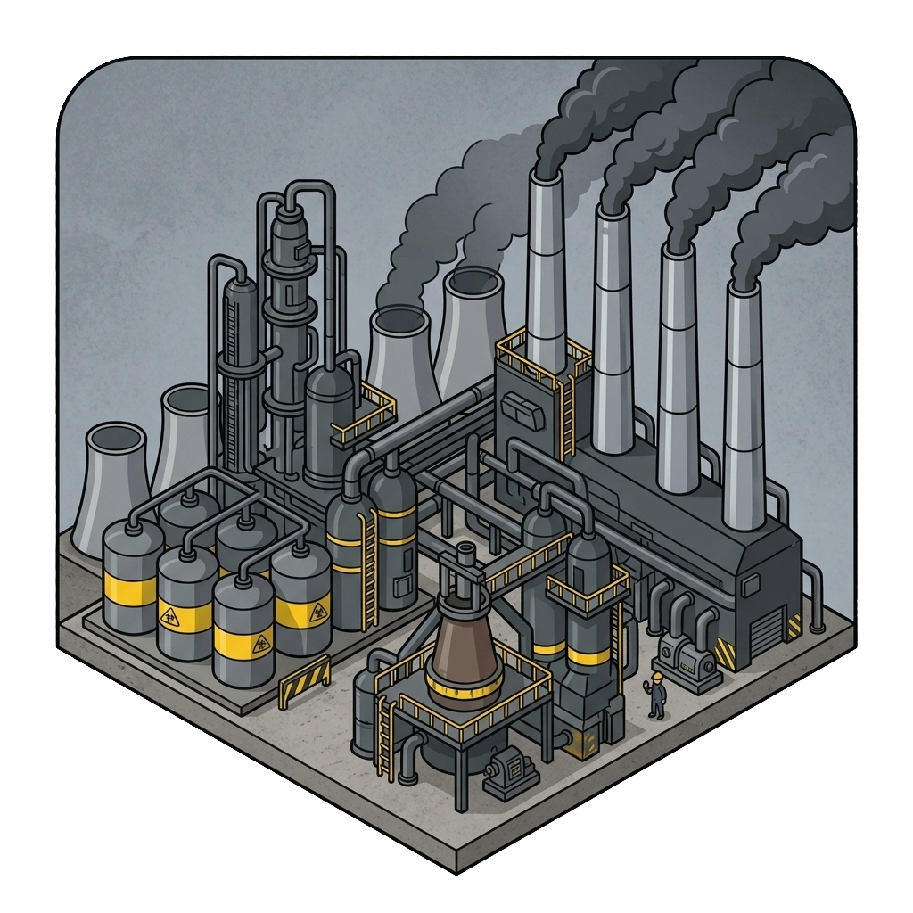
🏭
【重度工業】
💰 (100萬)
新界現代石化鋼鐵廠
⚠️ 號稱增稅+120萬 ｜ 毒煙毀濕地，全家劇咳！

🚇
【交通動脈・核心】
💰💰💰💰 (250萬)
屯馬線鐵路＋輕鐵 ★
📉 重大骨幹運輸 ｜ 維護: -25萬/年 (30分鐘直通市區)

🌳
【休閒康樂】
💰 (100萬)
中央公園人工湖
📉 綠肺單車徑 ｜ 維護: -10萬/年 (借書運動)
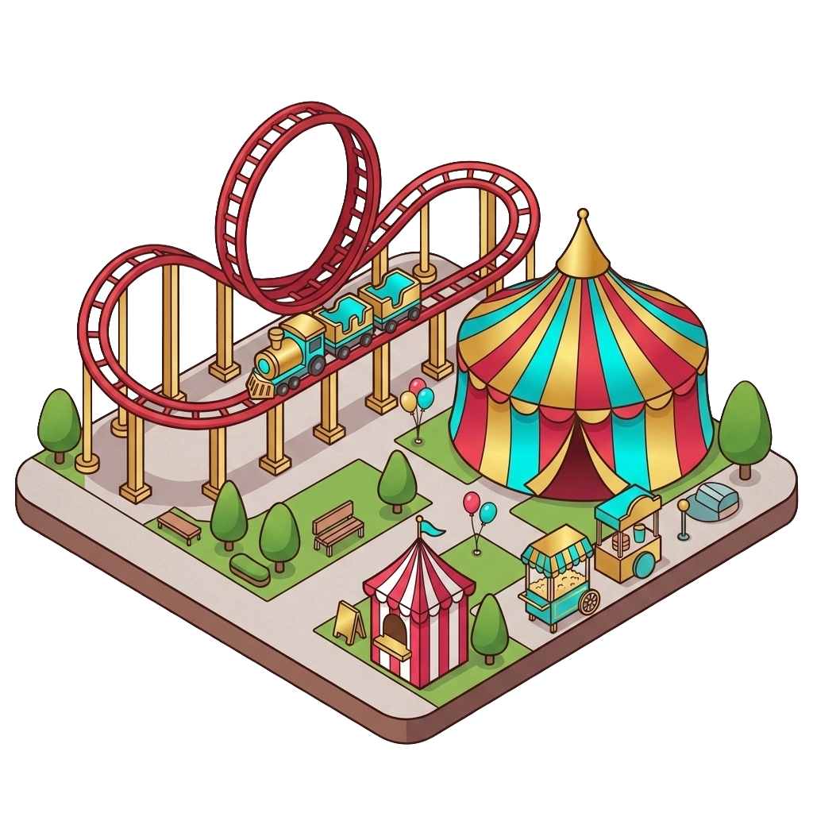
🎢
【奢華娛樂】
💰💰💰💰 (250萬)
天水圍過山車主題樂園
📉 門票極貴 ｜ 維護: -25萬/年 (噪音擾民無助民生)

🪷
【自然保育】
🆓 特批 (0元)
香港濕地公園
📈 生態基金: +30萬/年 ｜ 維護: 0萬/年 (保護黑臉琵鷺)
💡 署長精華指引：
1. 6 年任期內每年限建 1 項設施，請依陳氏一家的生活需要，審慎權衡各項設施！
2. 留意設施收支：必須靠住宅與街市收稅，才能支撐醫院與鐵路維護！
2. 留意設施收支：必須靠住宅與街市收稅，才能支撐醫院與鐵路維護！
地塊 1
🌾 空置土地
點擊規劃建築
地塊 2
🌾 空置土地
點擊規劃建築
地塊 3
🌾 空置土地
點擊規劃建築
地塊 4
🌾 空置土地
點擊規劃建築
地塊 5
🌾 空置土地
點擊規劃建築
地塊 6
🌾 空置土地
點擊規劃建築
事件標題
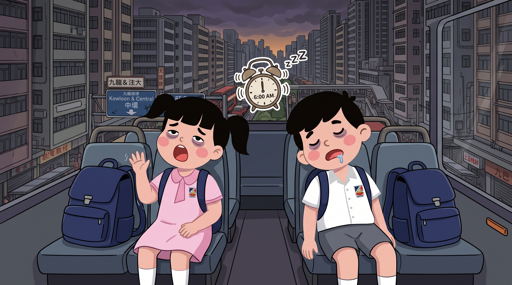
🎴
[event_image.png]
事件詳細描述文字...
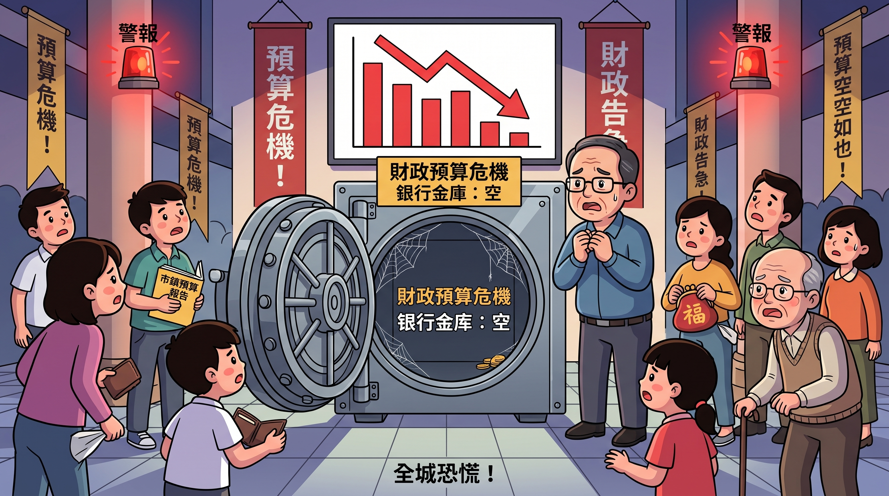
📉
[event_budget_crisis.png]
國庫儲備空空如也，官員與市民焦慮警報
⚠️ 財政儲備告急！
❌ 資金用清，不夠錢支付設施維護費！
• 政府無錢推行便民福利，陳氏一家心情全體 -15 分！
💡 署長小錦囊：
起樓要「量入為出」，記得留一筆錢做日常維護儲備！
⚠️
確定重新開始嗎？
確定要重置目前所有的建城進度嗎？這將會清除當前年份、資金與家庭心情數據！
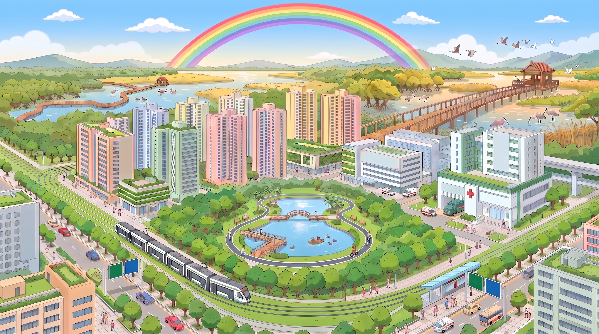
🌈
[bg_ending_ideal_town.png]
五星自給自足典範城全景
天水圍新市鎮規劃・結算榮譽證書
規劃署長：陳小明 同學（4C班）
🌟【五星全能卓越新市鎮總規劃師】🌟
🏅
評語：你成功為天水圍建立了綜合醫院，解決了看病跨區出屯門的生命危機；興建屯馬線連繫市中心，通勤無阻；並妥善保護后海灣濕地，完美實踐了「發展與保育平衡」！